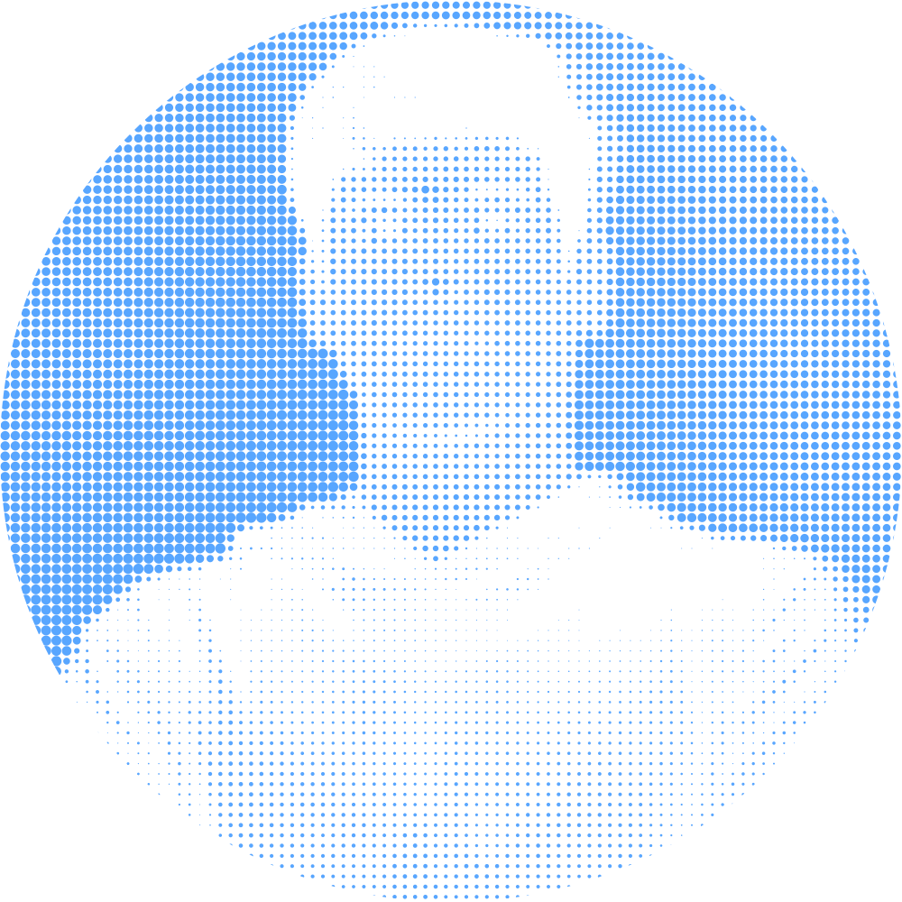
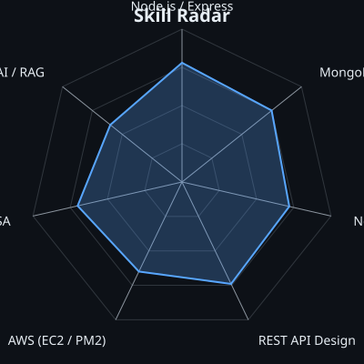
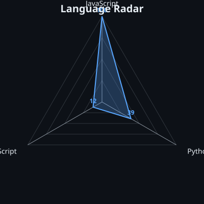
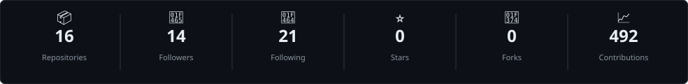

Final-year B.E. Information Science Engineering student, JSSATE Bengaluru — graduating May 2027

|
 |
 |
| Self-rated Skills | GitHub Language Stats |


Generated by samir-sah/samir-sah · Updated daily via GitHub Actions